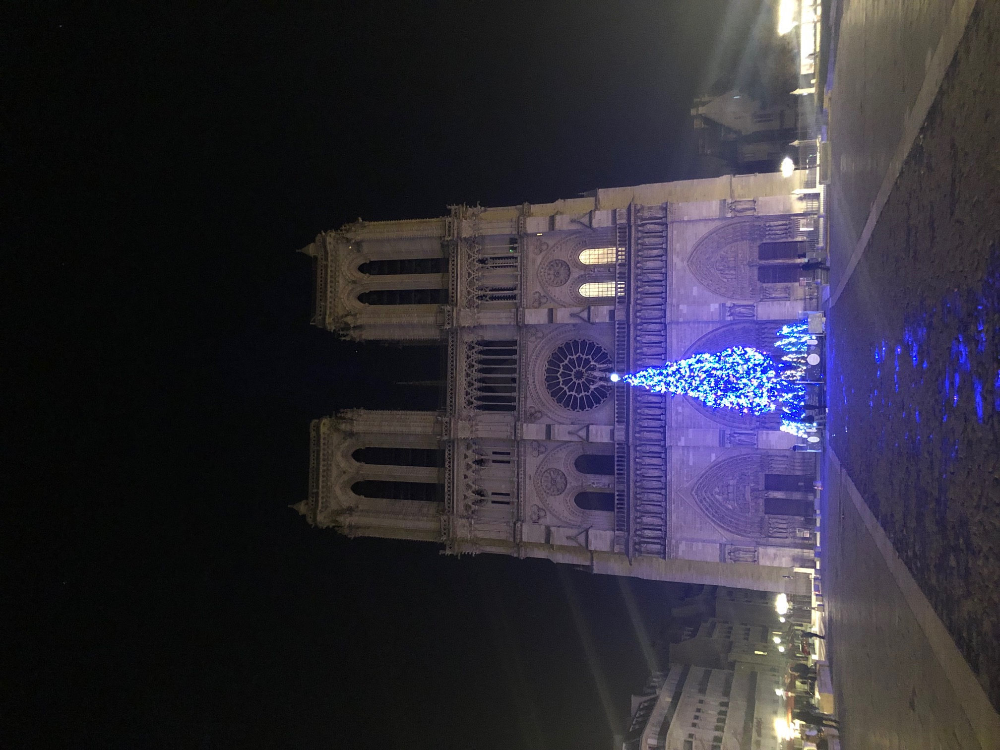
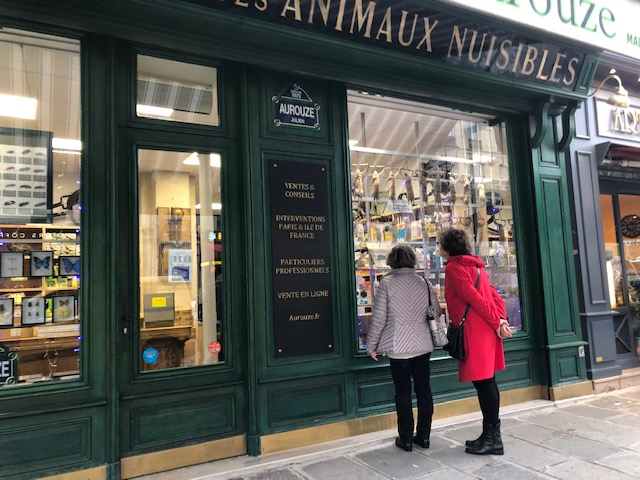

▸One of the things that I enjoy doing almost more than anything is to travel. I enjoy the freedom it offers to experience new things unhindered. from centuries old architecture, to new delicacies every place that I have traveled has offered something new and unique that has earned it the title of "adventure". I have traveled to India, Nepal, England, Malaysia, Japan, as well as multiple states but the one place I'll focus on for this assignment is the week I spent in Paris.
▸ The above is all a bunch of fancy text to basically say that I like traveling. Honestly before this trip I really had no desire or intention of ever going to Paris. But the opportunity presented itself when my friend a was invited to interview a few bands playing during the same week and asked if I would tag along. We found the cheapest flight we could and off we went. We had planned to see three concerts, an opera and do some various sightseeing while in Paris. What I enjoyed most out of this trip was walking through city streets and feeling the history in everything around me. The Palais Garnier, the Louvre, the Arc de Triomphe all of it was amazing to see. Unfortunately the best was hands down Notre Dame. It was stunning to see in person and genuinely left me speechless.

▸ We tried as many different foods as we could find. from pubs and resturants to bakeries and fromageries. All of it was good but the treats were the best. I am not normally into sweet foods or baked goods but you can't help but get swept up in a tiny cafe across from Nortre Dame with a coffee and a treat. All in all I guess it was fun, great architecture, great museums, decently good food. I don't really know what else to say about it. It's pretty much what you expect when you think about Paris. We did find this really cool jazz club that was housed inside a very old century old wine cellar. We also found a really hilarious "American" style resturant. It also turns out that even though I enjoy musicals, I do not enjoy operas. The Garnier is a sight to behold and to be inside it was awesome but when it comes to operas? No thank you. The concerts were a lot of fun. We saw H.E.A.T. ( If you're interested, listen to "Into the Great Uknown". The whole album is top to bottom just hit after hit. Just listen to that opener and try not to have fun ), Shiraz Lane, One Desire, and Kreator ( I mean throw a dart at any of their albums and you're getting something solid. It might be blasphemous, but I do prefer the newer stuff because I enjoy the mixture of melodic and thrash ) . We saw a few other bands but those are the ones that were the most fun. Paris felt like a very musical city and it never felt that we went more than a block without hearing someone on the street playing an instrument or a resturaunt without a pianist or something. I have nothing else to say really. It was fun and a great adventure. The Eiffel Tower was boring though.
